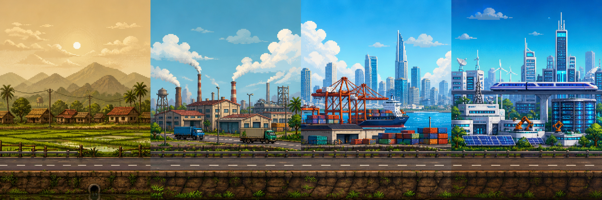

MLN122 / Chương 6
Đường Đua Công Nghiệp
1986
Đổi mới

1986
1995
2007
2025
★
1986 → 4.0
Nhấn Space để chạy
Vượt khủng hoảng. Hứng FDI, AI, nhân lực chất lượng cao.
1986
Đổi mới
Tiếp tục chạy
Kết quả
Bứt tốc
Chạy lại